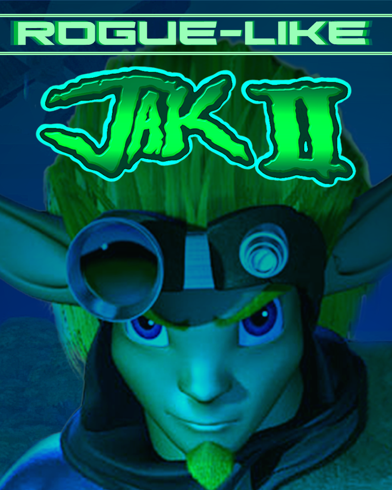
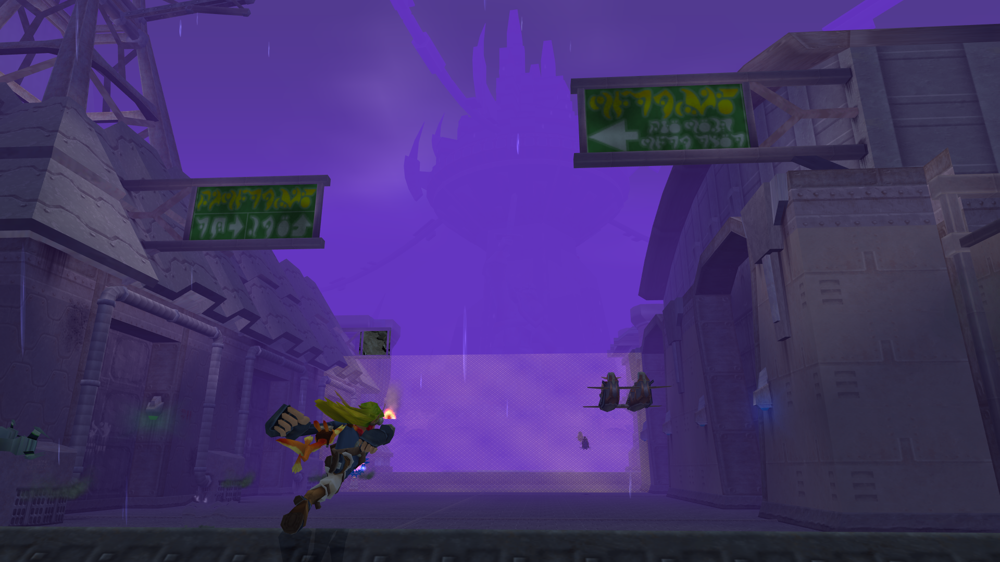
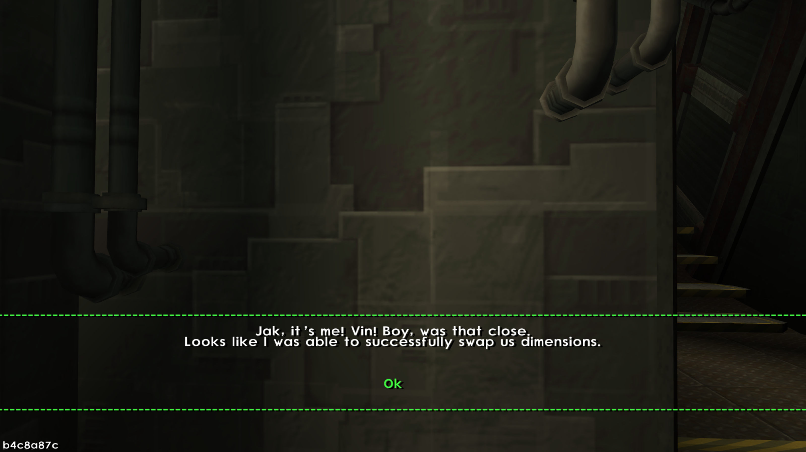
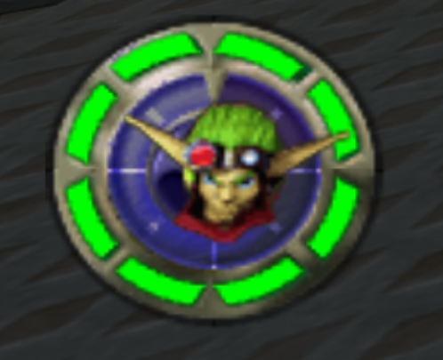
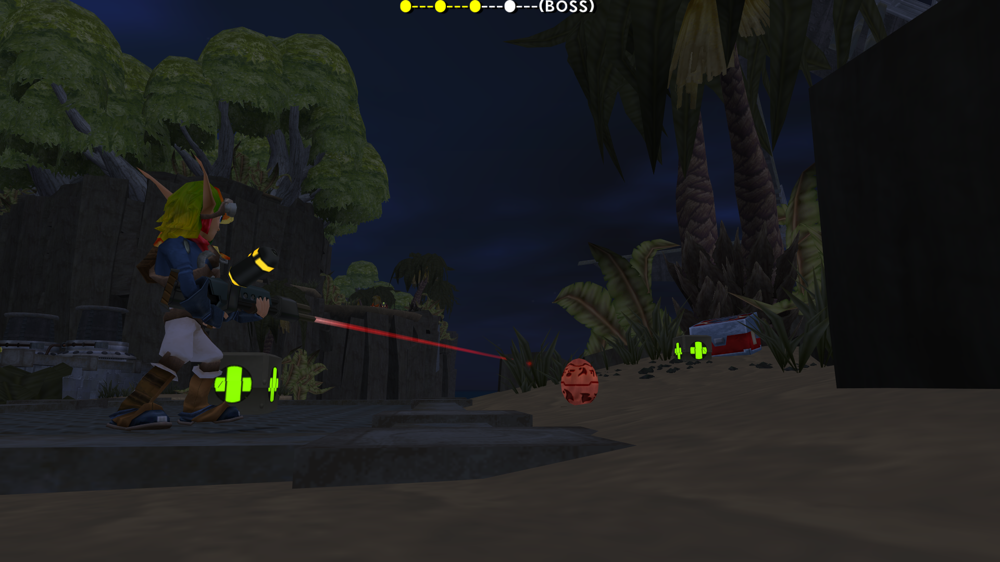
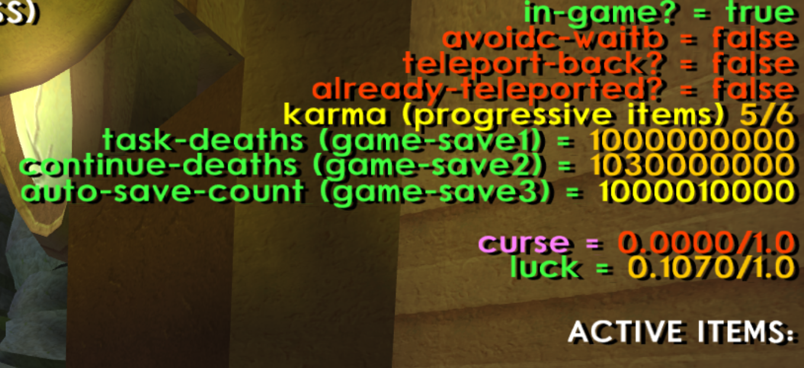

Roguelike Elements
Adds permadeath, upgrades, and progression throughout similar to a roguelike game. The player completes random vanilla missions without dying to progress.
Roguelike Jak II
An OpenGOAL experiment that started out focusing on making a checkpoint randomizer for Jak II.

Adds permadeath, upgrades, and progression throughout similar to a roguelike game. The player completes random vanilla missions without dying to progress.
To complement the roguelike elements, the player can complete a customized story to finish the mod itself. It is branched from both the Easter Egg in HM+ Jak II and the entire vanilla story.
To add replayability, Roguelike Jak II adds a shop in the hub before the player starts their run. These purchases add items to the in-run shop pool so the player can purchase them in their next run.
Roguelike Jak II Development Log
A cleaner breakdown of the design ideas, story setup, progression systems, and save-state solution behind Roguelike Jak II.
My initial plan was to make a checkpoint randomizer for Jak II, because Jak 1 already had something similar.
The main piece of the puzzle I had to solve was simple to ask and much harder to answer: how would one make that work?
Jak II has a very linear story progression, so there had to be something extra in the mix.
After completing a mission, the player rolls a random mission in the current act. They clear three random missions, then fight that act's boss as the fifth mission.
The run structure gives the linear campaign a new shape without throwing away the original mission content.
When I made the Easter Egg for HM+ in Jak II, I had no other plans for how the story would unfold. That changed after a dedicated writing session.
Before finishing Roguelike, I knew the story would not conclude in this mod, but I did not know when its finale would arrive.

The story picks up where the HM+ Jak II Easter Egg left off. The time loop is destroyed, and Cyber Vin pulls Jak out of the current dimension and into the Construction Site.

Vin tells Jak he must fix all timelines where Jak no longer exists, because The Entity killed the Jak of that timeline and broke the time loop.

Each completed mission gives every enemy +1 HP, making each step deeper into the run more dangerous.
Jak does not heal to full HP at the end of each level, so finishing cleanly matters as much as finishing quickly.
A full-HP clear increases luck, which improves the odds of enemies dropping orbs and skull gems during the run.
 In-Run Shop
In-Run Shop
As enemies get stronger, so can the player. Orbs are refashioned into currency for the HipHog shop.

Hub TokensThe hub shop uses Tokens. Skull gems convert into Tokens at the end of each run, letting players add items to the in-run shop pool.

Vin needs help acquiring eco shards in specific acts. The progression happens in order, but a skilled player can still complete the entire mod in one run.
Found in Act 1 by taking it from a random Krimzon Guard.
Found in a random Act 2 crate, with better odds from a higher luck stat.
Bought from the Act 3 shop for 100 orbs.
One of the main problems in Roguelike was what happened when a player had to quit or crashed mid-run. Naturally, all of the player's current items needed to be saved before the run ended.
At this current moment, if the player re-entered the game mid run, all of their items would be gone, and the game wouldn't know which stage the player was in.
This created a huge issue with the game's saving system.
For safety purposes, I did not touch save-file progression at all. I did not want to risk corrupting player save files by adding new data directly to the file.
Without this feature, the mod would be impossible. I would not expect players to accept losing progress in the middle of a frustrating run, so I needed another solution.
Thankfully, Jak II has unused game-save variables, like the Scout Fly counts used in Jak 1, attached to the save file. There are only so many of those variables, so I had to make a compact system.

The modulo save state is the most important feature of the Roguelike mod. I created it to extract as much value as possible from the game's existing save variables.
The way it works is that I pick a specific digit to represent a certain state in the game's progression that I want to save.
Then I use a modulo equation to give the remainder of the integer, and divide it by a number within a multiple of 10, extracting the exact digit I want to check.
In GOAL, this would look something like (= (/ (mod (-> *game-info* continue-deaths) 1000) 100) 1) to check for a 1 in the hundreds place.
All items use 2 game-save variables, making 16 items possible at the moment. The value is capped at a billion because it is a 32-bit integer and cannot exceed 4.2 billion.
This allowed me to save the player's current items if they quit out of the game or crashed. When loading a save, if the specific number place was a 1, the game knew the player had that item.

Vin tells the player to acquire an eco in a specific act. Once all three are collected, the player unlocks a special powerup: Light Eco!.
Available in random crates in a regular run, light eco can be used as a power-up to enhance Jak's weapons. It is also used as the only way to damage Kor in the final battle.
The player can now traverse into Act 4 to beat Metal Kor, restore the time loop, and complete the mod.
After restoring the time loop, only one dimension remains to be fixed. The Entity is locked away in the dimension with Jak: a desolate dimension where it will never be seen again.
Enter the HM+ Jak 3 Mod